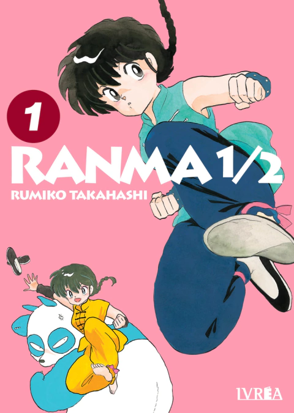

Ranma 1/2

Genma y Ranma Saotome son padre e hijo y panda y chica respectivamente, ya que entrenando en cierto lugar de China fueron
víctimas de una maldición: cada vez que se mojan con agua fría, se convierten en el último ser que se haya ahogado en las
fosas en que cayeron.
Esto no pasaría de algo simpático (ponele) salvo por un temita: Ranma termina comprometido a su pesar con Akane,
una de las hijas de Soun Tendo, para juntos llevar adelante el dojo de artes marciales de este.
Sus transformaciones no sólo serán un problema (y un cago de risa) sino que se va a llenar de personajes que intenten matar
a uno/a de los dos para quedarse con su prometido/a.
¿Por qué no demostrar amor, con un te quiero y ya, con un beso y ya? ¡Y así todo podría ser mejor!